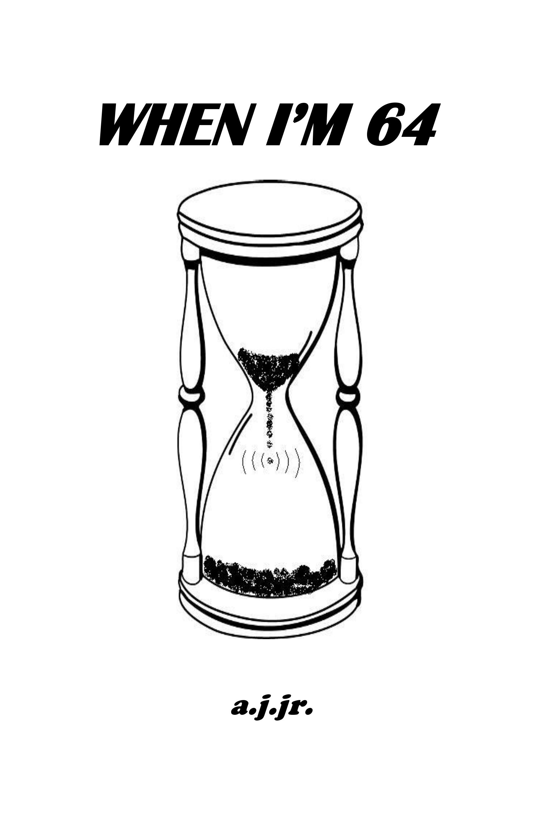

when i'm by a.j.jr
A humorous look at how the boomer generation made it through the 60s.

No matter where you grew up or spent your formative years in the 60s and 70s, this book is bound to get you remembering what made us so special. Why do you think the TV networks are scheduling "look back" program. Heck, even the Rolling Stones are still touring!
Put on your hip hugger jeans, tie-dyed shirt and John Lennon shades. Better yet, put the "album" soundtrack from Saturday Night Fever on your stereo and get out your disco shoes. Take a break from the new millennium. Look back at what we've been through. You can even inhale. What a long, strange trip it's been!